Pick a day. Tick off your sets.
Kitae is a free workout journal built around your training days. Plan your split once, log every set and watch your lifts climb.
- .android F-Droid and Google Play soon Source code
- .iphone Join the TestFlight beta Source code Needs iOS 26 or newer
See it on your phone.
The screens follow this page's light or dark theme.
.iphone Kitae for iPhone
-
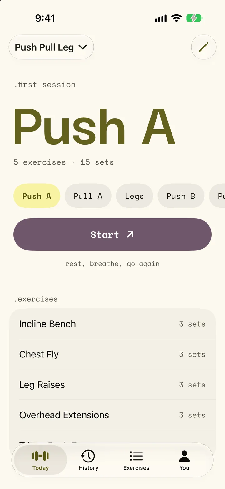
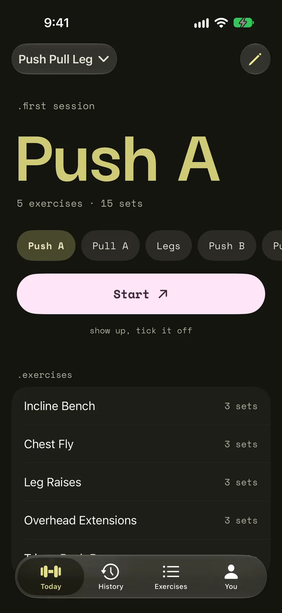
.today -
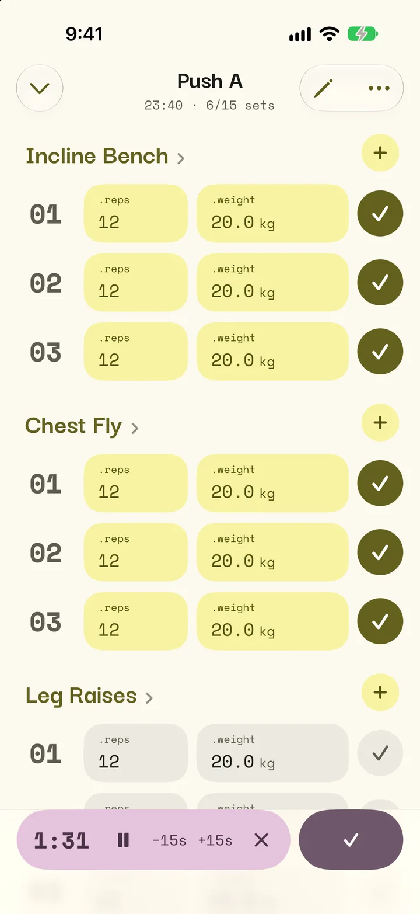
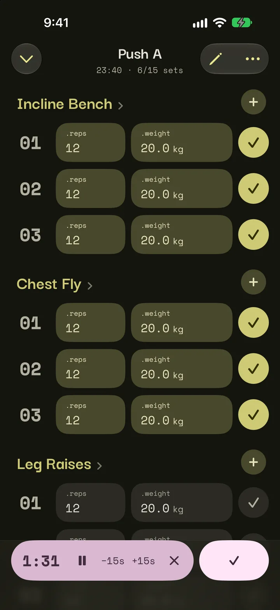
.workout -
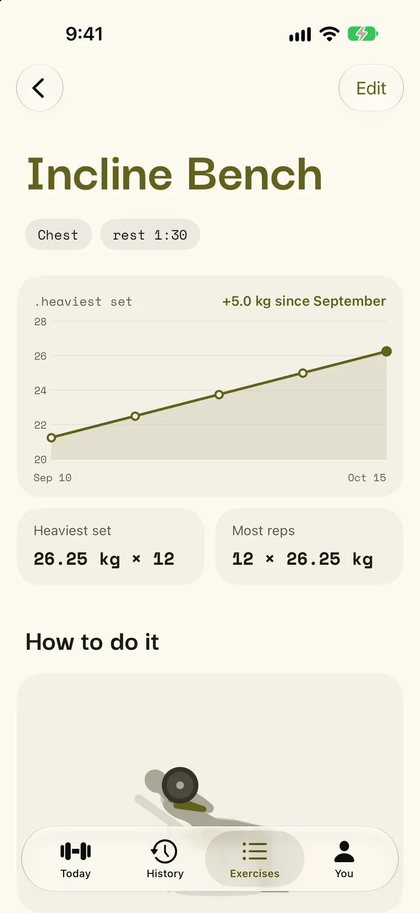
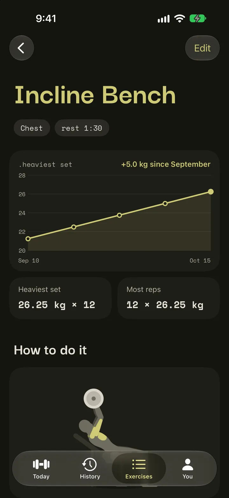
.progress -
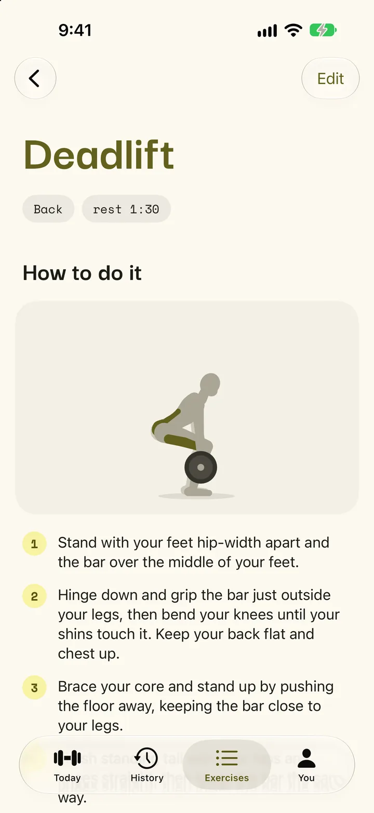
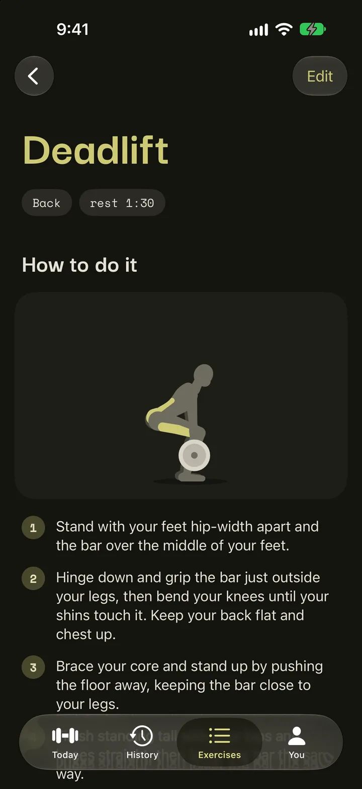
.how to do it -
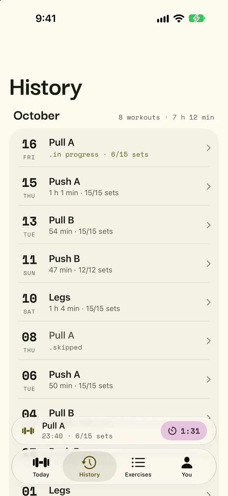
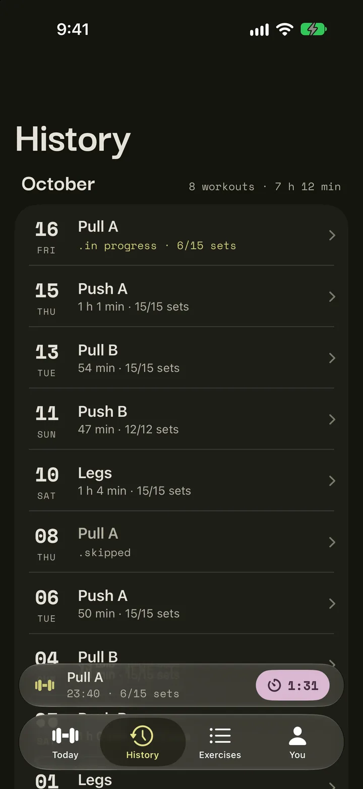
.history -
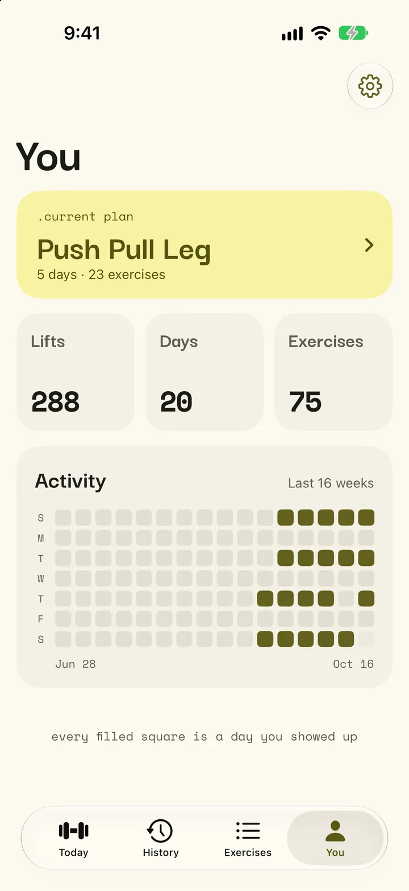
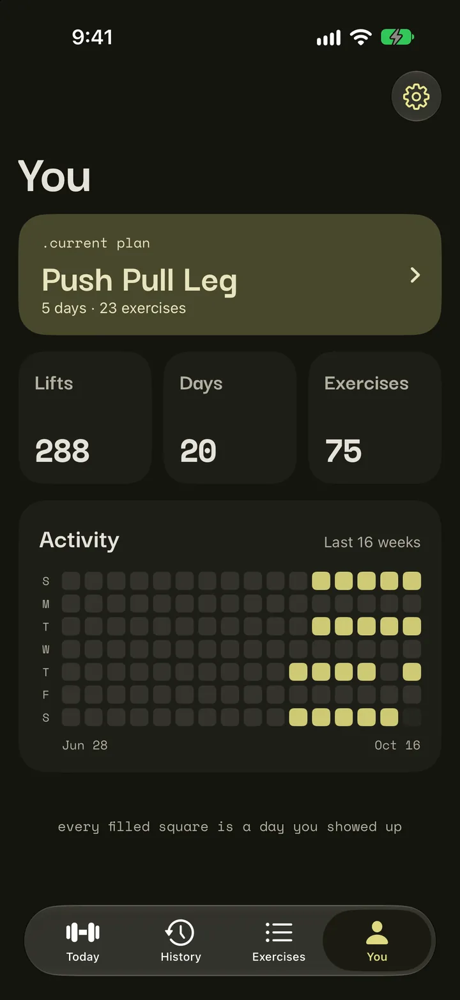
.you
.android Kitae for Android
-
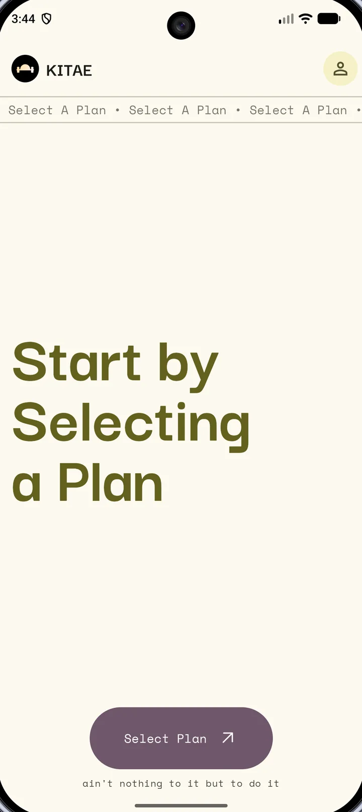
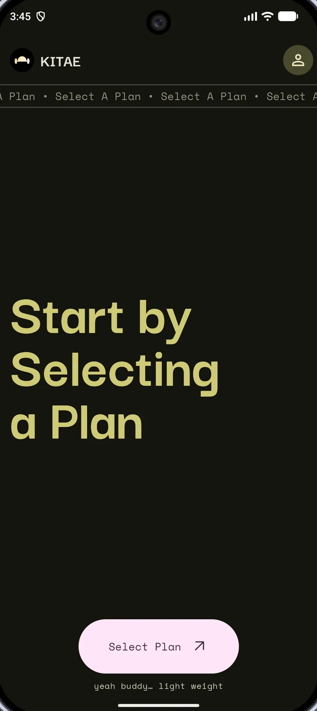
.first launch -
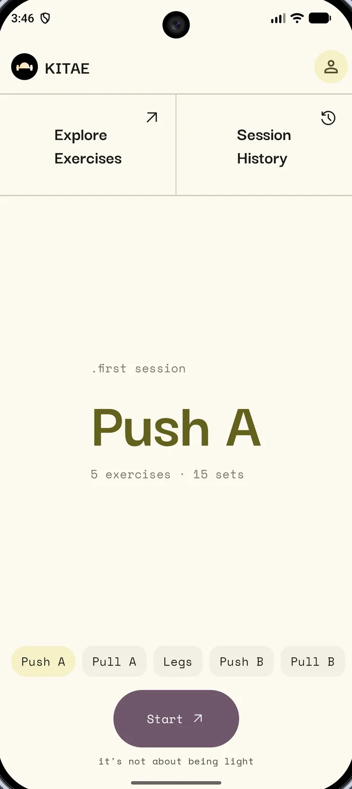
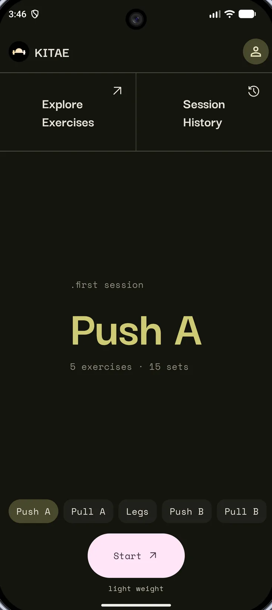
.today -
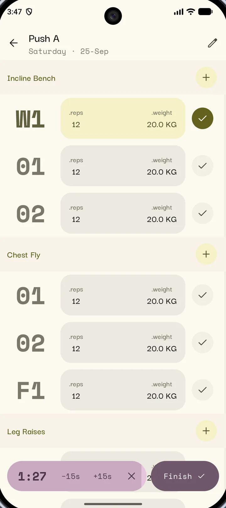
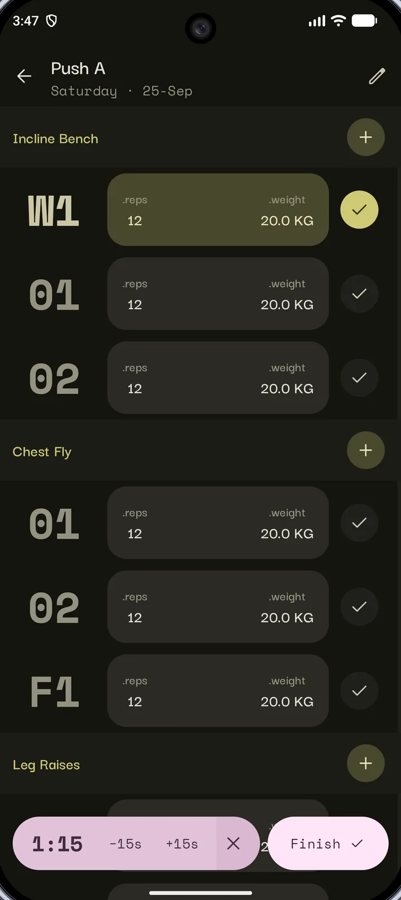
.workout -
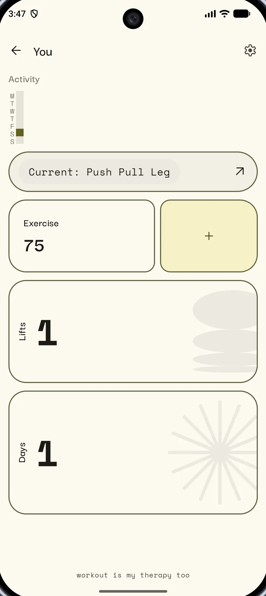
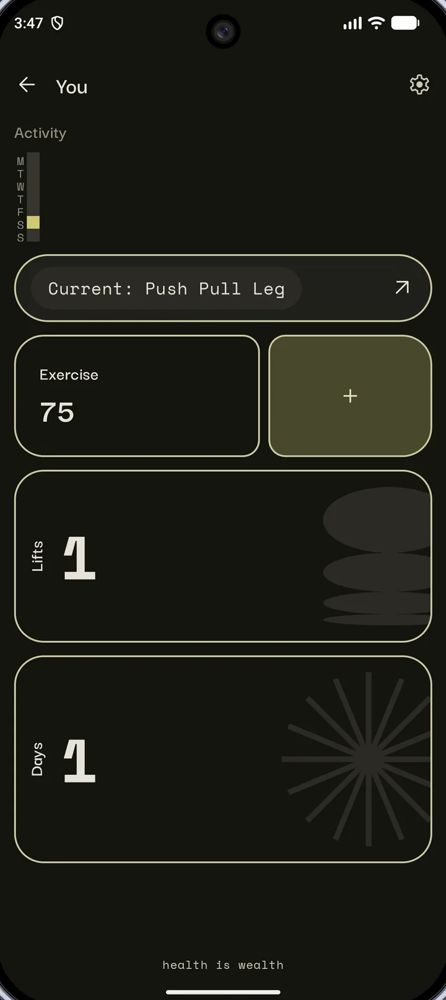
.you
Your day is already waiting.
Open Kitae and the next day in your plan is up. Start it, tick off each set as you do it and let the rest timer count you back in.
When you finish, you choose what happens to the sets you skipped. The plan keeps up with what you really lifted.
Everything a lifter needs, nothing they don't.
- .days
- Name your training days, pick their exercises and plan the sets ahead. Kitae always knows which day is up next.
- .sets
- Log sets as you go, add one on the fly and keep warm-ups first. Weights show in kilograms or pounds.
- .rest
- A rest timer starts after each set. On iPhone it follows you to the Lock Screen and the Dynamic Island, and on Android it is a notification.
- .exercises
- Start with 75 exercises, each with its own page of steps, and add your own. On iPhone each page charts your heaviest set.
- .history
- Every workout, month by month, with how long it took and how many sets you finished. Open one to see what you lifted.
- .progress
- Totals for your lifts, days trained and exercises, and a grid with a square for every day you trained.
Your data is a file, and it is yours.
Kitae has no accounts and no cloud. Back up to a plain zip file in any folder you like and restore it on Android or iPhone, because both apps use the same backup format.
On iPhone, Kitae backs up after every workout. On Android, it backs up daily, weekly or monthly, as you choose.
- .no accounts
- .no ads
- .no tracking
- .no feeds
Kitae, 鍛え
Kitae comes from the Japanese kitaeru, "to forge, to train": what lifting does to you, one session at a time.